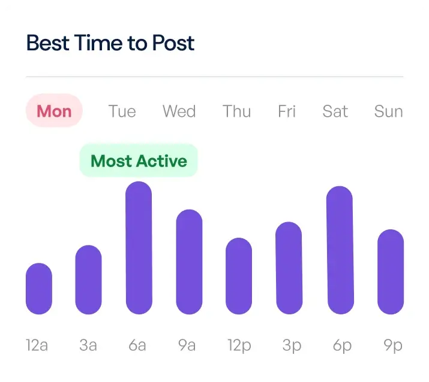

Create and schedule content quicker.

Social Media 10x Faster with AI

Over 4,000 5-star reviews
Schedule to social media.

Optimize post timings to publish content at the perfect time for your audience.

Manage multiple accounts and platforms.
Maintain a consistent posting schedule.

Write your content using AI.

>56%
faster audience growth